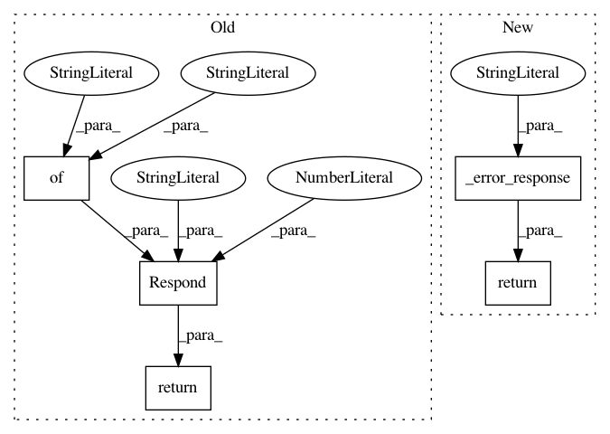

8af7e1d683b691a3cfbf1c47ed32cc88f33e33f6,tensorboard/plugins/debugger_v2/debugger_v2_plugin.py,DebuggerV2Plugin,serve_stack_frames,#DebuggerV2Plugin#Any#,220
Before Change
return _missing_run_error_response(request)
stack_frame_ids = request.args.get("stack_frame_ids")
if stack_frame_ids is None:
return http_util.Respond(
request,
{"error": "Missing stack_frame_ids parameter"},
"application/json",
code=400,
)
if not stack_frame_ids:
return http_util.Respond(
request,
{"error": "Empty stack_frame_ids parameter"},
After Change
return _missing_run_error_response(request)
stack_frame_ids = request.args.get("stack_frame_ids")
if stack_frame_ids is None:
return _error_response(request, "Missing stack_frame_ids parameter")
if not stack_frame_ids:
return _error_response(request, "Empty stack_frame_ids parameter")
stack_frame_ids = stack_frame_ids.split(",")
run_tag_filter = debug_data_provider.stack_frames_run_tag_filter(
In pattern: SUPERPATTERN
Frequency: 3
Non-data size: 5
Instances
Project Name: tensorflow/tensorboard
Commit Name: 8af7e1d683b691a3cfbf1c47ed32cc88f33e33f6
Time: 2020-01-22
Author: cais@google.com
File Name: tensorboard/plugins/debugger_v2/debugger_v2_plugin.py
Class Name: DebuggerV2Plugin
Method Name: serve_stack_frames
Project Name: tensorflow/tensorboard
Commit Name: 8af7e1d683b691a3cfbf1c47ed32cc88f33e33f6
Time: 2020-01-22
Author: cais@google.com
File Name: tensorboard/plugins/debugger_v2/debugger_v2_plugin.py
Class Name: DebuggerV2Plugin
Method Name: serve_source_file
Project Name: tensorflow/tensorboard
Commit Name: 8af7e1d683b691a3cfbf1c47ed32cc88f33e33f6
Time: 2020-01-22
Author: cais@google.com
File Name: tensorboard/plugins/debugger_v2/debugger_v2_plugin.py
Class Name:
Method Name: _missing_run_error_response